Mobile UI gallery
Chart views, touch inspection, axis settings, palettes, and source-file details.
In portrait, tap or slide across the chart to update the fixed preview. The selection stays after you lift your finger. View data opens its source files. Landscape and tablet layouts use the full chart area without this panel.
Captured in Obsidian’s official mobile emulation at a 390 × 844 portrait phone viewport and a 1024 × 768 large landscape viewport, with 2× pixel density. Unused status-bar space is excluded. These are desktop emulator captures, not physical-device screenshots. Sample data is fictional and in English.
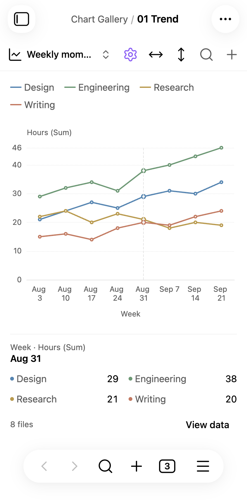
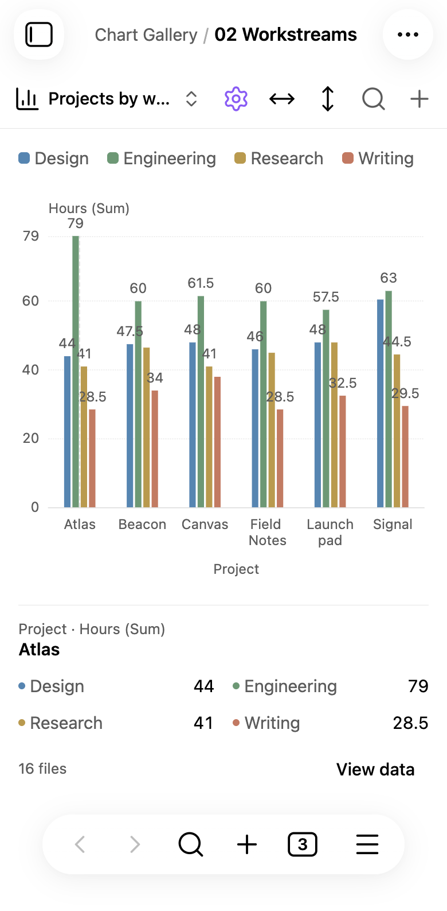
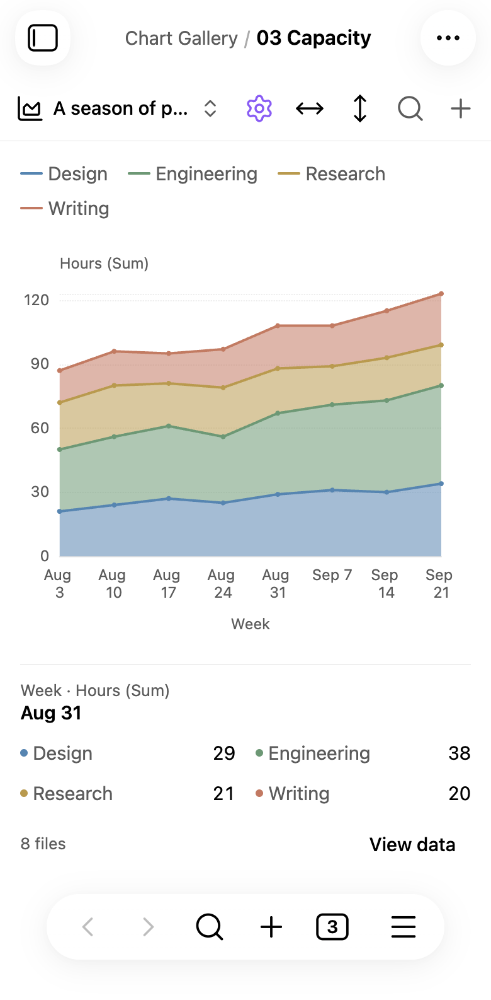
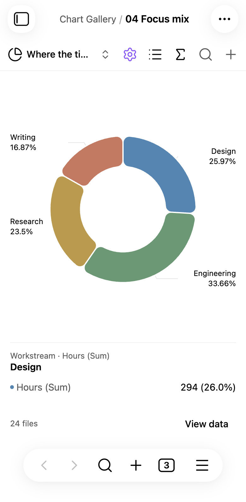
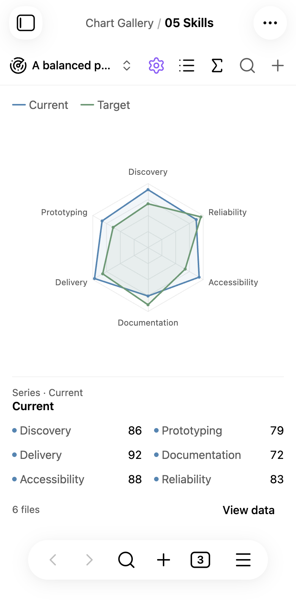
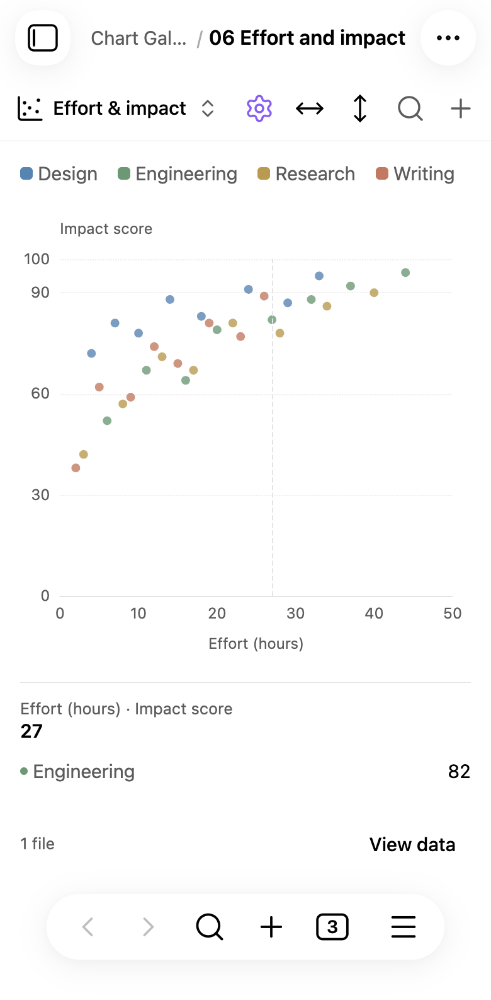
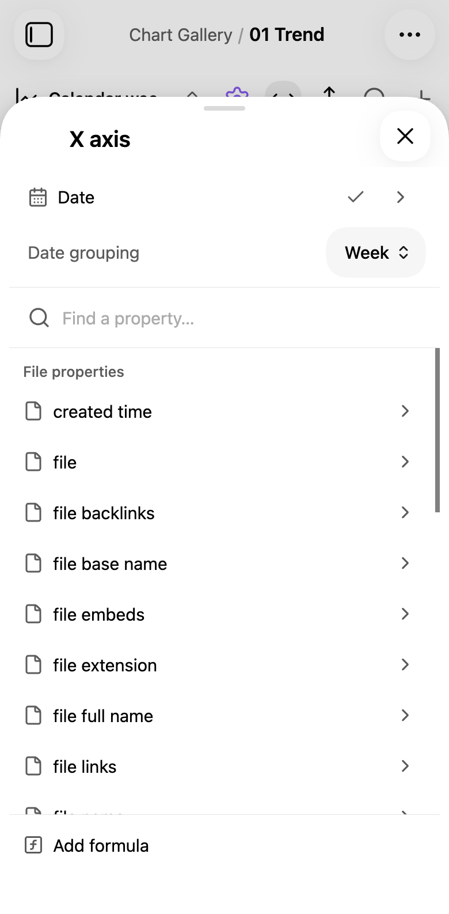
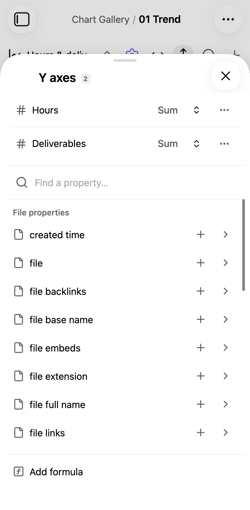
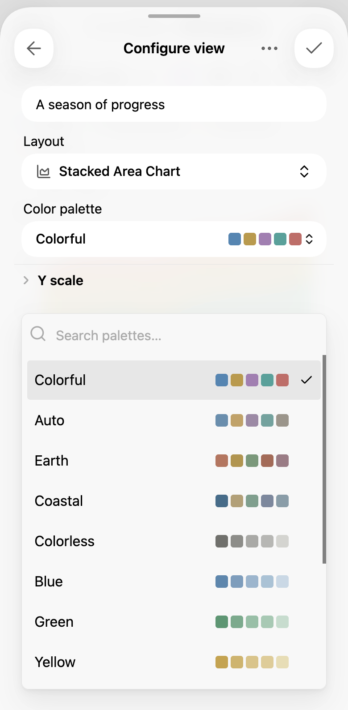
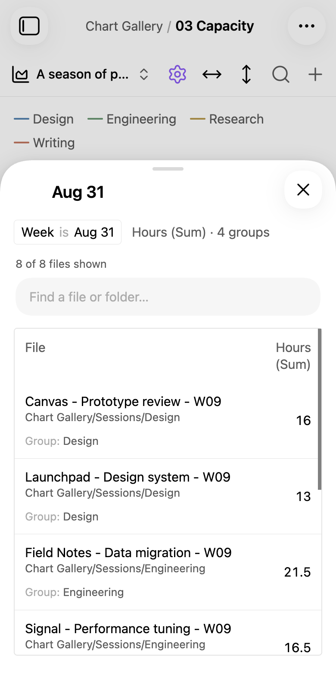
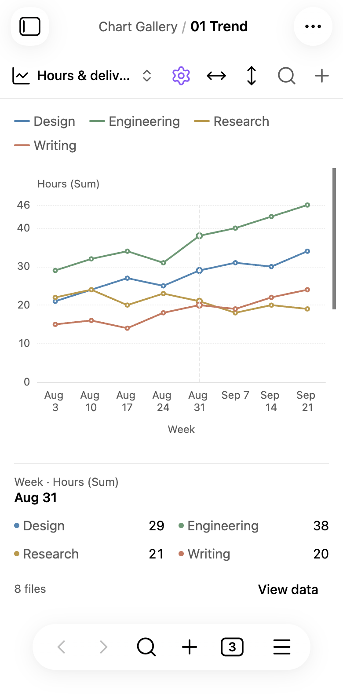
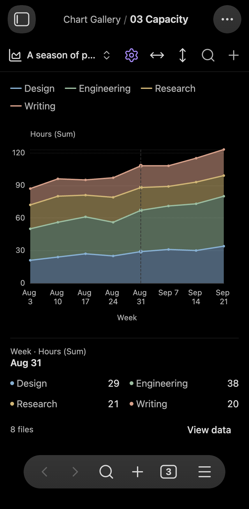
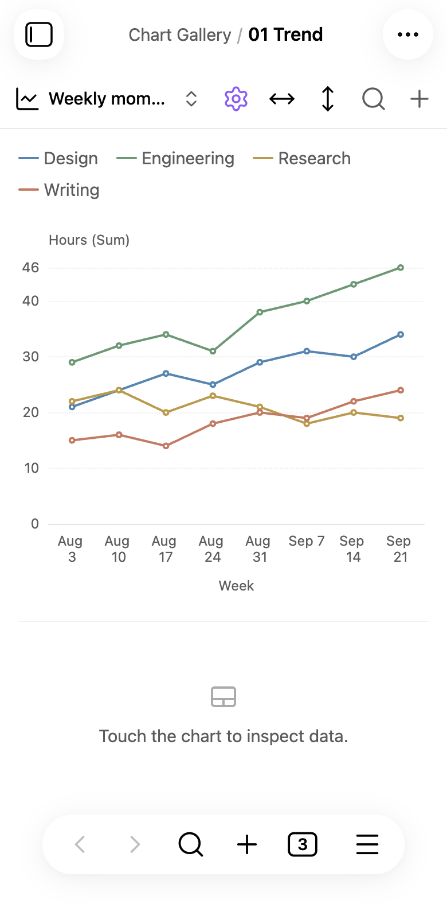
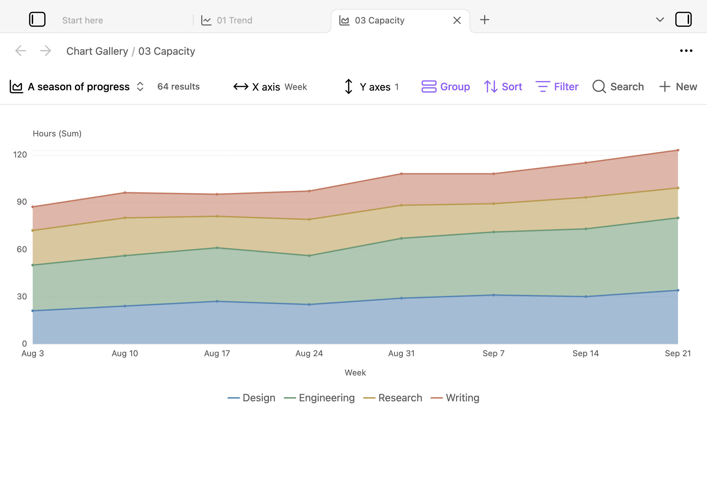